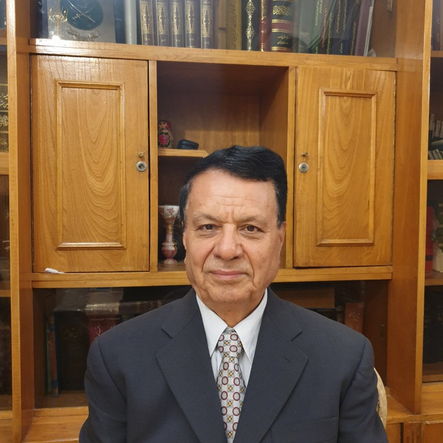

درباره پژوهشگر:پرسش و پاسخ از قرآن٬ مثنوی و اقبال: پرسش ۱ - جان سراسر آگاهی یعنی چه؟ پرسش ۲ - بهترین کتاب خداشناسی چیست؟ پرسش ۳ - خداشناسی و تغییر وجود چگونه است؟ پرسش ۴ - آیا دین راه تغییر وجود است؟ پرسش ۵ - نسبت ناروا به آفرینش چیست؟ پرسش ۶ - رزیلت اخلاقی از نظر مولانا چیست؟ پرسش ۷ - چگونه دین باعث شوریدگی عشق میشود؟ پرسش ۸ - ارتباط مادر و فرزند چگونه است؟ پرسش ۹ - جایگاه زن در عشق آفرینی چیست؟ پرسش ۱۰ - پوچی و افسردگی از کجاست؟ پرسش ۱۱ - صف عاشقان حق چگونه است؟ پرسش ۱۲ - مولانا در وصال؟ پرسش ۱۳ - با عیبجویان چه کنیم؟ پرسش ۱۴ - مضرات عیب جویی از دیگران چیست؟ پرسش ۱۵ - اعتماد به نفس چگونه است؟ پرسش ۱۶ - شکر و کفر نعمت چگونه است؟ پرسش ۱۷ - بهترین کتاب انسان شناسی چیست؟ پرسش ۱۸ - با افرادی که اقرار به خطا نمی کنند چگونه باید رفتار کرد؟ پرسش ۱۹ - پوچی در زندگی از کجاست؟ پرسش ۲۰ - چه چیزی ما را از گفتن حرفی باز می دارد؟ پرسش ۲۱ - آرامش تمام از کجاست؟ پرسش ۲۲ - بیکرانگی آدم؟ پرسش ۲۳ - علم آموزی؟ پرسش ۲۴ - چگونه از خودکشی جلوگیری کنیم؟ سخنرانی های صوتی: سخنرانی ۱ - جان سراسر آگاهی سخنرانی ۲ - اخلاص عمل سخنرانی ۳ - بیکرانی آدم - قسمت ۱ سخنرانی ۴ - بیکرانی آدم - قسمت ۲ سخنرانی ۵ - عشق و نیستی - قسمت ۱ سخنرانی ۶ - عشق و نیستی - قسمت ۲ سخنرانی ۷ - خدای من که ناز است سخنرانی ۸ - معشوق لب شکرین سخنرانی ۹ - ناقصان سرمدی سخنرانی ۱۰ - دین و شوریدگی عشق - قسمت ۱ سخنرانی ۱۱ - دین و شوریدگی عشق - قسمت ۲ سخنرانی ۱۲ - جایگاه زن در عشق آفرینی - قسمت ۱ سخنرانی ۱۳ - جایگاه زن در عشق آفرینی - قسمت ۲ سخنرانی ۱۴ - عشق و نیستی - قسمت ۱ سخنرانی ۱۵ - عشق و نیستی - قسمت ۲ سخنرانی ۱۶ - اخلاص عمل سخنرانی ۱۷ - مولانا در وصال سخنرانی ۱۸ - نپذیرفتن حقیقت - قسمت ۱ سخنرانی ۱۹ - نپذیرفتن حقیقت - قسمت ۲ سخنرانی ۲۰ - ایمان رویت است سخنرانی ۲۱ - عشق و مسجد مهمانکش سخنرانی ۲۲ - آرامش تمام از کجاست؟ سخنرانی ۲۳ - عیبجویی کتب چاپ شده یا درحال چاپ: کتاب ۱ - جلد سوم کتاب فرجه ای در جزیره مثنوی معنوی، بوی نان گفتگوها از کانال تلگرام: گفتگوهای گروه ٬۱ از ۲۰۱۷/۲/۱۱ تا ۲۰۱۷/۸/۹ گفتگوهای گروه ٬۲ از ۲۰۱۷/۸/۹ تا ۲۰۱۸/۱/۳۱ گفتگوهای گروه ٬۳ از ۲۰۱۸/۱/۳۱ تا ۲۰۱۸/۱۰/۴ گفتگوهای گروه ٬۴ از ۲۰۱۸/۱۰/۴ تا ۲۰۲۰/۳/۸ گفتگوهای گروه ٬۵ از ۲۰۲۰/۳/۸ تا ۲۰۲۱/۱۲/۲۱ گفتگوهای گروه ٬۶ از ۲۰۲۱/۱۲/۲۱ تا ۲۰۲۴/۲/۱۶ گفتگوهای گروه ٬۷ از ۲۰۲۴/۲/۱۶ تا ۲۰۲۴/۲/۱۸ سخنرانی ها از کانال تلگرام: سخنرانی ۱ - ارتقا انسان از نظر اقبال سخنرانی ۲ - فرق عقل و عشق سخنرانی ۳ - زشت خویی و مدارا سخنرانی ۴ - آفتی در فرازمانی و بی زمانی سخنرانی ۵ - حضرت علی کیست؟ سخنرانی ۶ - بی زمانی چیست؟ سخنرانی ۷ - طالب و مطلوب، قسمت ۱ سخنرانی ۸ - طالب و مطلوب، قسمت ۲ سخنرانی ۹ - خیر و شر، قسمت ۱ سخنرانی ۱۰ - خیر و شر، قسمت ۲ سخنرانی ۱۱ - خیر و شر، قسمت ۳ سخنرانی ۱۲ - مصلحت در دین ما ودر دین عیسی، قسمت ۱ سخنرانی ۱۳ - مصلحت در دین ما ودر دین عیسی، قسمت ۲ سخنرانی ۱۴ - نور اولیاء چیست، قسمت ۱؟ سخنرانی ۱۵ - نور اولیاء چیست، قسمت ۲؟ سخنرانی ۱۶ - جان جان و جان پروردگار چیست؟ سخنرانی ۱۷ - نباز به معارف سخنرانی ۱۸ - جبر و اختیار، قسمت ۱ سخنرانی ۱۹ - جبر و اختیار، قسمت ۲ سخنرانی ۶۲ - جذب حق شدن، قسمت ۲ سخنرانی ۶۳ - اعتماد به نفس، قسمت ۱ سخنرانی ۶۴ - اعتماد به نفس، قسمت ۲ سخنرانی ۶۵ - چگونه از خودکشی جلوگیری کنیم، قسمت ۱؟ سخنرانی ۶۶ - چگونه از خودکشی جلوگیری کنیم، قسمت ۲؟ سخنرانی ۶۷ - جهان هوشمند است سخنرانی ۶۸ - نوروز و بهار طبیعت سخنرانی های تصویری: سخنرانی ۱ - بزودی منتشر خواهد شد قرائت قرآن عبدالباسط ۱ - حشر، مجود عبدالباسط ۲ - تکویر، مجود منشاوی ۱ - طارق، مجود کل قران با صدای عبدالباسط، مجود کل قران با صدای منشاوی، مجود کل قران با صدای حصاری، ترتیل???
???